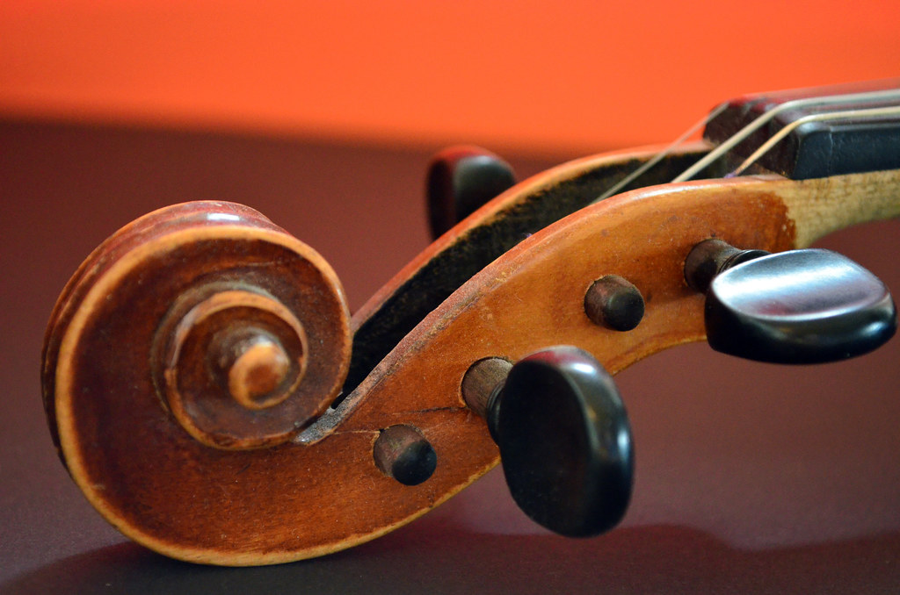
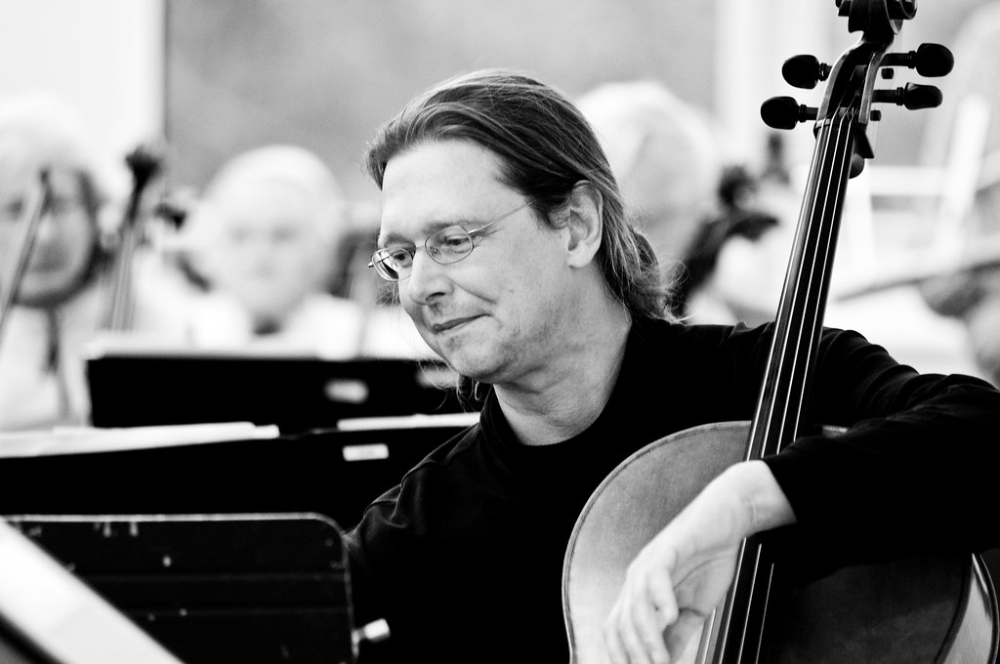

Музыка · 19-бөлім · Штрихтер Music · Section 19 · Articulation Музыка · Раздел 19 · Штрихи и артикуляция
Бірдей ноталарды әртүрлі айтуға болады: байланыстырып немесе үзіп. Бұл — артикуляция. The same notes can be "spoken" in different ways: smoothly or detached. That is articulation. Одни и те же ноты можно «произнести» по-разному: связно или отрывисто. Это и есть артикуляция.
Артикуляция — дыбыстарды айту (шығару және байланыстыру) тәсілі. Сөзді анық немесе көмескі айтқанға ұқсас. Articulation is the way of "pronouncing" (sounding and joining) the notes — like saying a word clearly or blurred. Артикуляция — это способ произнесения (извлечения и соединения) звуков. Похоже на то, как мы произносим слово чётко или слитно.
Штрихтер — орындаудың нақты тәсілдері: легато, стаккато, нон легато, маркато. Strokes (штрихи) are the concrete ways of playing: legato, staccato, non legato, marcato. Штрихи — это конкретные приёмы исполнения: легато, стаккато, нон легато, маркато.
Штрих музыканың сипатын өзгертеді — ноталар сол күйінде қалса да. A stroke changes the character of the music — even with exactly the same notes. Штрих меняет характер музыки — даже при тех же самых нотах.
💡 Бірдей сөзді ашулы немесе жұмсақ айтуға болады. Музыкада да: бірдей ноталар, бірақ әртүрлі штрих — әртүрлі көңіл-күй. 💡 The same word can be said angrily or softly. In music too: the same notes, but a different stroke — a different mood. 💡 Одно и то же слово можно сказать зло или мягко. В музыке так же: одни и те же ноты, но разный штрих — разное настроение.

| ШтрихStrokeШтрих | БелгісіSignЗнак | Қалай естіледіHow it soundsКак звучит |
|---|---|---|
| Legato легатоlegatoлегато |
лига ⌒a slur ⌒лига ⌒ | байланысты, тегіс — дыбыстар «құйылады»connected, smooth — notes "flow" into one anotherсвязно, плавно — звуки «перетекают» друг в друга |
| Staccato стаккатоstaccatoстаккато |
нотаның үстіндегі/астындағы нүкте ·a dot above/below the note ·точка над/под нотой · | үзік-үзік, қысқаdetached, shortотрывисто, коротко |
| Non legato нон легатоnon legatoнон легато |
арнайы белгісізno special signбез особого знака | бөлек, бірақ үзік емесseparate, but not detachedраздельно, но не отрывисто |
| Marcato маркато / екпінmarcato / accentмаркато / акцент |
екпін >accent >акцент > | баса көрсетіп, қысымменemphasised, with a pushподчёркнуто, с нажимом |
📌 Ноталар бірдей болса да, штрих музыканың сипатын өзгертеді: легато — әнді, жұмсақ; стаккато — ойнақы, жеңіл; маркато — батыл, табанды. 📌 Even with the same notes, the stroke changes the character of the music: legato — singing and soft; staccato — playful and light; marcato — bold and firm. 📌 Даже при одних и тех же нотах штрих меняет характер музыки: легато — певуче, мягко; стаккато — игриво, легко; маркато — решительно, твёрдо.
Барлық батырма бірдей 4 нотаны ойнайды: до–ре–ми–фа. Тек штрих өзгереді — тыңдап, айырмасын сезіңіз. Every button plays the same 4 notes: C–D–E–F (до–ре–ми–фа). Only the stroke changes — listen and feel the difference. Все кнопки играют одни и те же 4 ноты: до–ре–ми–фа. Меняется только штрих — слушайте и почувствуйте разницу.
🎵 бірдей ноталар — әртүрлі штрих same notes — different strokes одни и те же ноты — разные штрихи

LegatoLegatoLegato
әнді, жұмсақ — бір ысқыменsinging, soft — one bow strokeпевуче, мягко — одним движением смычка
StaccatoStaccatoStaccato
ойнақы, жеңіл — қысқа қозғалысplayful, light — short motionsигриво, легко — короткими движениями
MarcatoMarcatoMarcato
батыл, табанды — екпінменbold, firm — with an accentрешительно, твёрдо — с акцентом